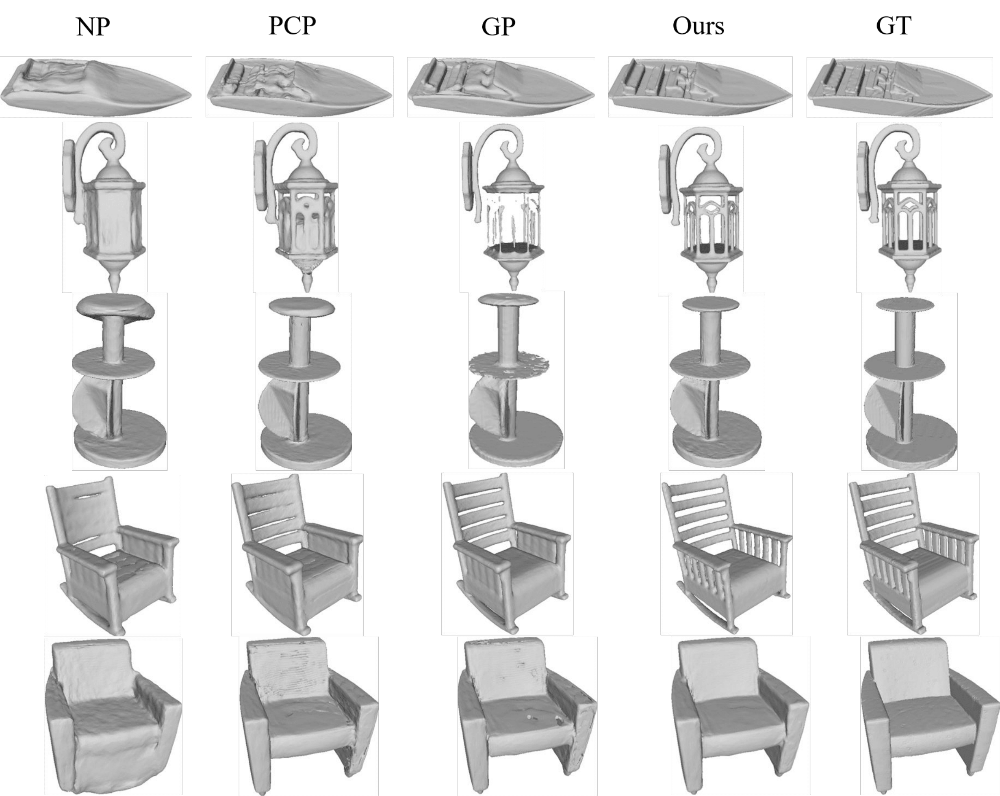
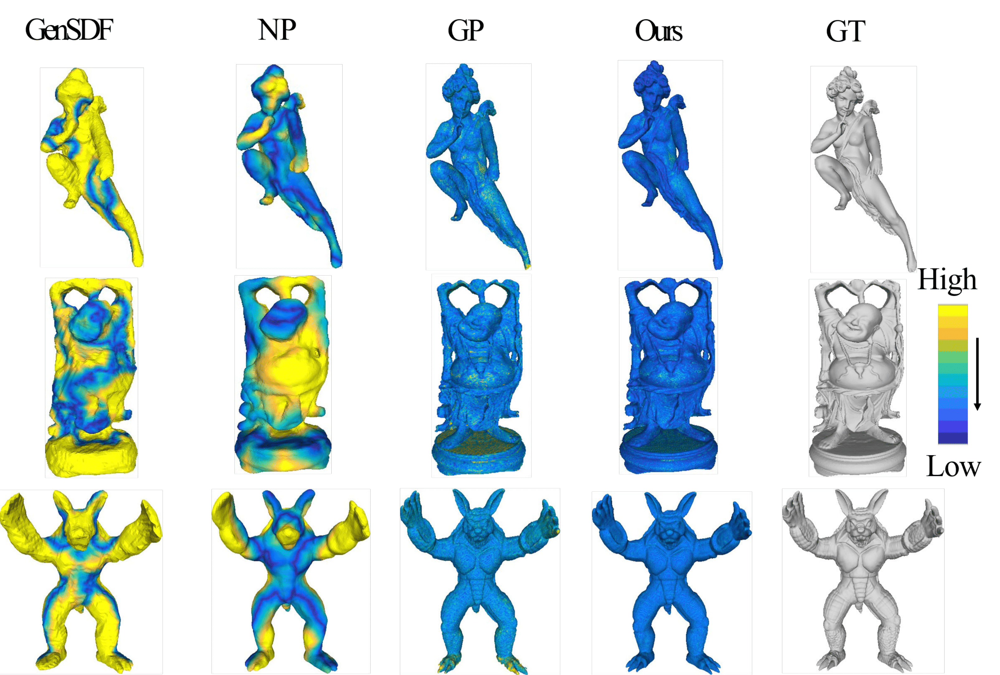
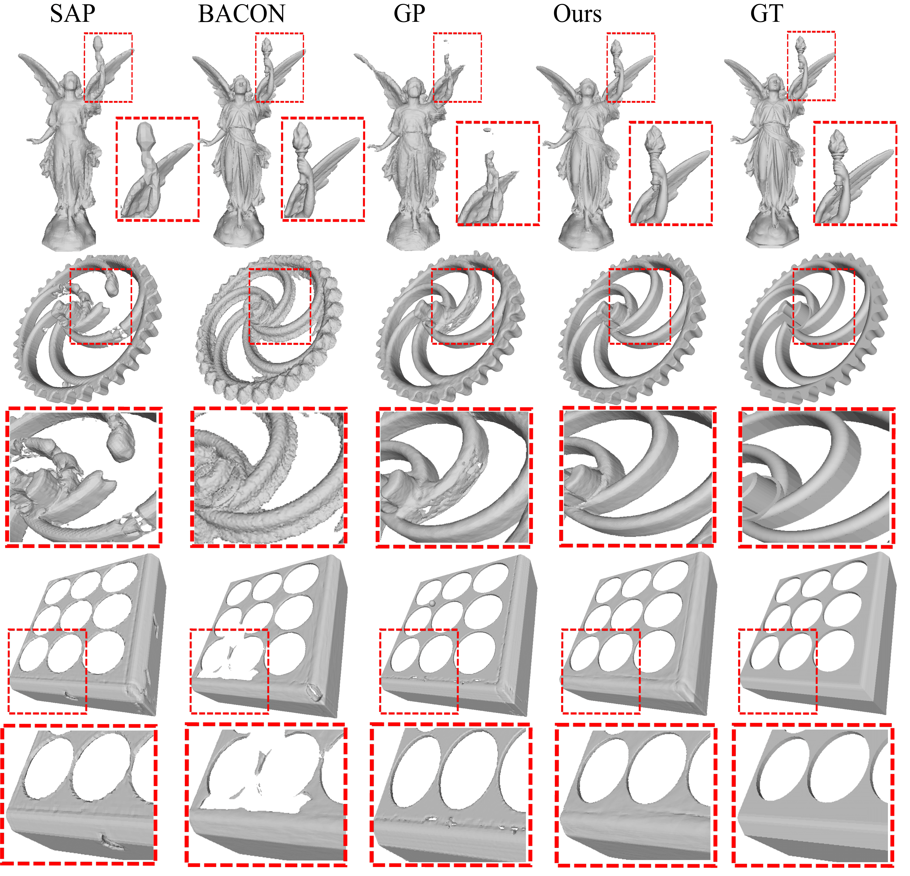
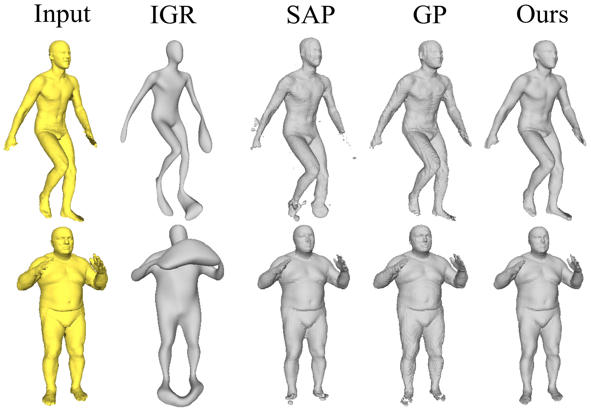
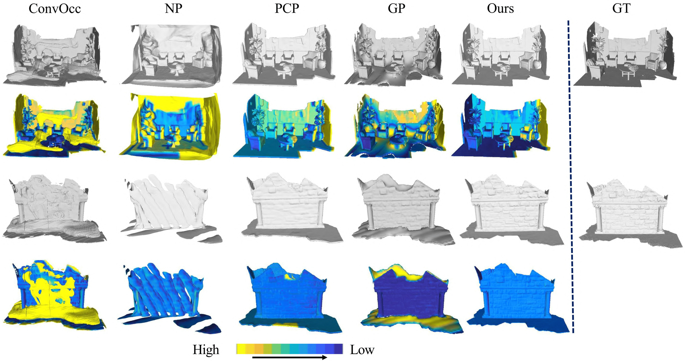
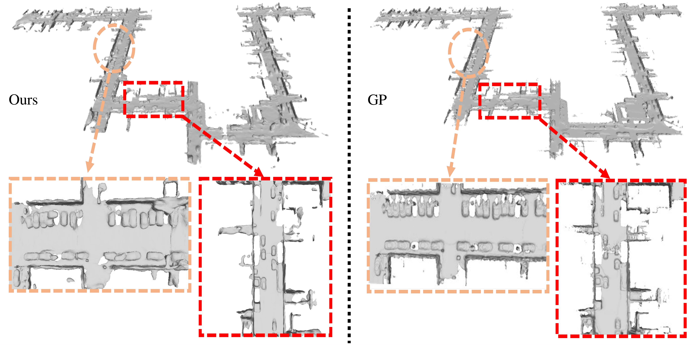

Visualization Results
Visualizations of reconstruction results on object-level and scene-level datasets. The transition from blue to yellow represents increasing reconstruction errors, and the red boxes highlight local details.
Comparison on ShapeNet Dataset

Comparison on FAMOUS Dataset

Comparison on SRB Dataset

Comparison on Thingi10K Dataset

Comparison on D-FAUST Dataset

Comparison on 3D-Scene Dataset

Comparison on KITTI Dataset
